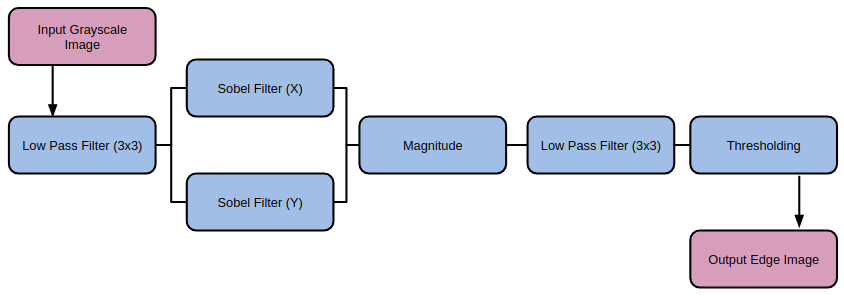
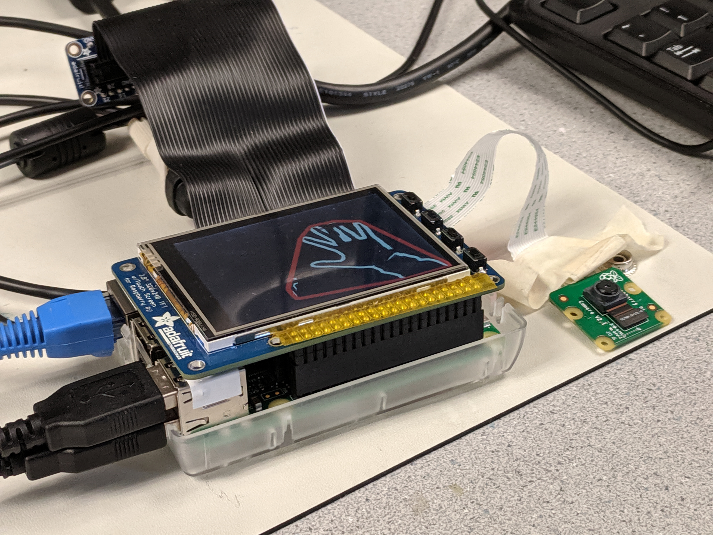

Gesture Controlled Mouse
Paolo Arguelles (pa394)
Mike DiDomenico (md848)
Demonstration Video
Introduction
For this project, we used a Raspberry Pi and gesture detection with OpenCV to emulate a Bluetooth mouse. The Raspberry Pi has a PiCam attachment, and captures continuous frames. The camera faces upwards, and the image of the blank ceiling is stored, and removed from all of the successive frames. Each frame is processed to detect the hand, and which of two gestures that the user is making. The motion of the hand, and the gestures are analyzed to send Bluetooth mouse commands to a remote machine.
Project Objectives:
- Identify the user’s hand in front of a static background
- Determine if the user is making one of two gestures
- Emulate a Bluetooth mouse
- Use information about a user’s hand to send commands to control the mouse of another device, for example, move the hand would move the mouse, and a certain gesture would map to a mouse click.
Design Process and Testing
When starting the project, we experimented with OpenCV on both our laptops and on the Raspberry Pi. We began on the Pi by simply reading frames from the PiCam. [Code Listing] We explored a number of different resolutions throughout the project, to try to find which resolution would provide all of the necessary details, but which would also allow us to process frames quickly. Through experimentation, we eventually decided to use capture resolutions of (WxH).
We started the process of mapping hand movements to mouse gestures by first attempting to identify a hand in an arbitrary environment. This task was much more difficult than we had expected, and eventually we constrained ourselves to identifying the user’s hand in front of a static background. However, we first explored a number of options for hand identification. We started by exploring various edge detection operations, finding the most success with the Sobel operator. We also explored the Laplacian operator, but found it produced significantly more noise.
[Laplacian and Sobel kernels]
[Side by side sobel comparison]
We used OpenCV to find edges in the input image, with the OpenCV Sobel() function and a kernel size of 1, in each orientation. We then used the magnitude of the gradient in both orientations to generate a simple edge image. After exploring other operations before and after applying the Sobel operation, we found the best results by applying the following sequence of operations.

[Code reference]
With Sobel edge detection, we had an effective method of finding the outline of a hand, but still no method of finding the hand itself. After doing some research, we attempted using color to identify a user’s hand. To do this, we set a button which, when pressed, would use a simple region growing method with two thresholds to identify the region at the center of the image. To use this method, the user would position their hand in the center of the screen, then press the button. Starting at the center of the image, the algorithm would check each neighbor, and ensure that the pixel intensities were within a small threshold to their neighbor and within a large threshold to the original, center pixel. This method worked reasonably well, and by averaging the region found with the region growing algorithm, we could find a good estimate for the user’s skin color. However, this introduced a new problem which we had suspected that we would encounter. The user’s face would often interfere with this method, which encouraged us to look at other techniques.

We attempted to use a similar algorithm, but one which used edges generated not from a grayscale image, but from each of the hue, saturation, and value representation of the image. The idea behind this strategy was that hue segmentation/edges would separate the user from the background, and that saturation/value would separate the hand from the face, since the lighting was slightly different on each part of the body. While this seemed promising at first, it was unreliable in different lighting, and had highly variable performance. [Code reference]
[### IR STUFF HERE ###]
Our last attempt to distinguish a user’s hand from an arbitrary background was using depth detection, under the assumption that in general, the user’s hand would be closer to the camera than any other objects in the frame. We used a variety of techniques included in OpenCV, but found quickly that it was very difficult to align two cameras to act as a stereo camera, as we had planned. In the end, we found that there was too much noise in our camera setup to validate depth detection, and we decided to change our approach. [Code reference]
After researching the Leap Motion Controller , a product similar to the system we were trying to produce, we decide to try putting the camera below the user’s hand facing up, instead of in front of the user facing them. Our edge detection algorithm worked well in this situation, especially since the ceiling was unchanging compared to when the background had included more of the user than their hand. To solve the issue of edges included in the background, we used background subtraction. [Code listing] On startup, our system would record a frame of the background without the user in it. It would then compute an edge image in the same way as described above, and would subtract that image from each new edge image generated from frame captures from the camera. This removed almost all edge artifacts from the background.
[Hand image on ceiling background subtracted]
With this setup we were able to identify the edges of the user’s hand and arm. To track the movement of the hand, we computed the center of mass of the edge image using OpenCV moment calculations. By keeping track of the center of mass of the hand, we could effectively track the motion of the hand, in a way that was sufficient for our purposes. One of the problems with this approach was that the arm would interfere with the center of mass of the hand when the arm is in a significant part of the frame. However, we expected that we would be able to overcome the issue by either ignoring the arm, or constraining the camera so that the user’s hand would not move far enough into the frame to significantly interfere with the center of mass. [Code reference]
[Hand image with center of mass marked]
Since we had a method of tracking the user’s hand and of identifying the edges of the hand, we started researching gesture detection. Many of the methods that we saw used a combination of a convex hull around the hand edges, and the defects in that convex hull. Using the OpenCV {convexHull} function, we found the convex hull of the edge image, as well as the defects with {convexityDefects}. [Code listing] We explored the possibility of using the convexity defects, but discovered that they were not as reliable as the hull, and some defects would appear and disappear with noise. However, we expected that we would be able to detect some simple gestures with only the convex hull of the hand.
[### SHAPE MATCHING STUFF HERE ###]
[images of the gestures we chose (edge images should be fine)]
[### MACHINE LEARNING STUFF HERE ###]
Once we settled on a gesture identification method, we moved on to implementing Bluetooth mouse emulation. We did so by building on a GitHub project , and by consulting a number of references (We found support for emulating a Bluetooth keyboard, but much less for mouse emulation). After some research, we set up a Bluetooth mouse emulation server using DBus, which would allow another python script or other entity to set mouse button press information and relative horizontal and vertical movement. [Code Listing] We added these calls to the code which managed the PiCamera image processing, and were able to control the mouse of a different device by moving a hand in from of the PiCam.
[### MULTITHREADING STUFF HERE ###]
[### CV OPTIMIZATION STUFF HERE ###]
In order to smooth out the movement of the mouse over Bluetooth, we used a temporal filter. We implemented this by creating a list of mouse states. Every time the user’s hand moved, the relative motion was added to the list, as well as whether or not the gesture was a mouse click. The average of these values was used as the as the input to the Bluetooth socket. The resulting behavior was a slight delay, since behavior from previous frames influenced the action taken on the current frame. However, the mouse movement was smoother in general, since it was slightly denoised. Additionally, the delay introduced was not a real time delay, but the result of using a low pass filter on values which have already happened.
Implementation
Our final demonstration system was implemented with a Raspberry Pi, PiCam, and PiTFT. When the user powers on the system, the applications starts immediately, and performs background subtraction to compensate for whatever background it is facing. After this, the user can press the 27 button on the PiTFT to quit the application, the 23 button on the PiTFT to use the current frame for future background subtraction, the 22 button on the PiTFT to record the current gesture as the “click” gesture, and the 17 button on the PiTFT to record the current gesture as the “no click”/hold gesture. Once the application is running, a user can connect to the RPi via Bluetooth. The device is named “RPi Mouse”, and the user should be able to connect normally, as to any Bluetooth device. Then, moving the user’s hand in the frame will send Bluetooth commands to move the mouse, and making the click gesture will send a mouse click command.

Results
The scope of our project changed, gradually but drastically, over the course of the project. The primary shift occurred when we changed the direction of the camera. At that point in the project, we decided to use a static background (the ceiling), instead of a variable background containing the user’s face. This decision was largely made because it made it much easier to distinguish the user’s hand from the background each image frame. It also meant that we could move forward with other methods of hand tracking and identification, other than using the depth of the hand. Because of this change, we did not meet our initial goal of tracking the hand in a dynamic environment, but still met the goal of hand tracking. We also met our goal of simple gesture detection. We are able to detect whether the user is making one of two gestures. Our project was successful in meeting our outlined objectives, and running at a reasonable speed.
The main performance issue we encountered (throughout the project) was image noise. We found it somewhat difficult to denoise the image spatially, but had some success. Toward the end of the project, when we had built a working system, we had difficulty with temporal noise. Small changes from one frame to another could cause large mouse movements, as well as “phantom” clicking or unclicking. It was not possible to implement any normal filtering operations, since they would have introduced delay into system, would have diminished the user experience. We attempted to use temporal filtering with some success, but with some delay. This problem resulting in a user interface that was not as smooth as we would have hoped.
Conclusions
What Worked
When we decided to orient the camera upwards, we needed a way to remove edges in the background from the image. We did so by capture a frame on startup, and subtracting the edge image of that frame from every subsequent image. This method of background subtraction sometimes removed edges of the hand that were overlaid on edges of the background, but worked well for our purposes. After experimenting with different hand tracking methods, we found that tracking the center of mass of the edge image worked well enough for controlling mouse movement; only later did we have some problems when we introduced clicking.
Our shape matching gesture detection system worked well after we had constrained ourselves to certain gestures. [NEED MORE OF HERE]
We build a bluetooth mouse emulation service on a GitHub project that emulated a Bluetooth keyboard. This project ran a DBus server, and when the user input a keystroke, it would forward that keystroke over Bluetooth. We changed this project so that instead of emulating a keyboard, the software emulated a mouse, which was more involved than we expected, since it was somewhat challenging to find the documentation for HID control codes. We got this project working as a mouse emulation server, which any python script could send commands to, which made it easy to incorporate into our project.
What Didn't Work
At the start of the project, we experimented with a number of different methods to detect the user’s hand. We initially tried to generate an edge image from the original frame, using different edge operators, filters, and thresholds. We varied many parameters and techniques, and eventually were able to create an edge image of only the significant edges in the image. However, this did not help us with hand detection, and so we next attempted to use the skin color of the user to segment the hand. We began by using a calibration algorithm were the user would place their hand in the center of the screen, and press a button. The algorithm would use region growing with thresholding to scan until it found colors that were significantly different from neighbors or where it started. This technique had a number of issues; the thresholds were very dependent on the specifics of the situation, including the lighting, background, and user. We approaching the same issue using edge images, and generated edge images in different ways, including using HSV segmentation, with different thresholds instead of RGB. However, we found that because of noise and variable environments, we could not find a process that worked reliable to identify the hand.
We next tried to use depth detection to identify the hand, since the hand was likely to be the closest object to the camera. Without a stereo camera, we attempted to use two cameras side by side, but between aligning them physically and the differences in noise, we were unable to create a usable depth image using the tools built in to OpenCV.
Another issue we encountered late in the project was creating smooth mouse motion. We also found that using center of mass detection worked well for mouse motion, but could cause abrupt mouse movement when the user changed gestures, since the shape of the object of interest (the hand/arm) would change with the gesture. We implemented a system to ignore movement while the gesture was changing, however, the detection of a gesture change and movement of the center of mass did not always align. We also wanted to determine a method for tracking the hand and ignoring the arm, but were unable to determine an appropriate method to distinguish the arm from the hand.
Opportunities for Improvement
some ideas: this section still needs to be written
Smoother interface
More optimization
Better gesture control
More gestures
Removing the arm from the hand image
Work Distribution
Paolo
pa394@cornell.edu
Paolo compiled and implemented an optimized version of OpenCV to achieve a ~30% speedup and worked with Mike to debug some problems as a result of the compilation. He incorporated absolute mouse tracking emulation on Raspbian using xdotool, and wrote a Python script using PyGame to demonstrate centroid tracking to move an on-screen sprite. The display of the filtered image and hull on the PiTFT external display, and wrote code to map background subtraction, mouse hold, click gesture set, and bailout functionality on the PiTFT's four buttons. He w Investigated GPU speedup, reassigning some blurring operations to take place on the PiCam to hardware to reduce loop runtime. Before we had finalized our hardware to a single PiCam, Paolo wrote code to interface two USB cameras with the Raspberry Pi and OpenCV, and worked with Mike to attempt to implement a stereo camera setup, an approach we ended up scrapping in favor of a single camera setup.
Mike
md848@cornell.edu
I started working on this project by experimenting with different edge detection methods. I explored different filters and techniques, as well as different parameters and thresholds. I also experimented with many different variations of hand detection algorithms, including calibration to the skin color of the user using region growing, and generating edge images with HSV format images instead of RGB format images. I also wrote some code, and worked with Paolo on different depth detection methods. I implemented center of mass object tracking, and worked with Paolo to develop a good method of background subtraction. Paolo and I worked together to build and compile the optimized OpenCV library, and I modified the Bluetooth keyboard emulation project to instead emulate a Bluetooth mouse with commands sent from an external python script.
Parts List
- Raspberry Pi $35.00
- Raspberry Pi Camera Module V2 $25.00
- Adafruit PiTFT $35.00
Total: $95.00
Code Appendix
Test
// Hello World.c
int main(){
printf("Hello World.\n");
}